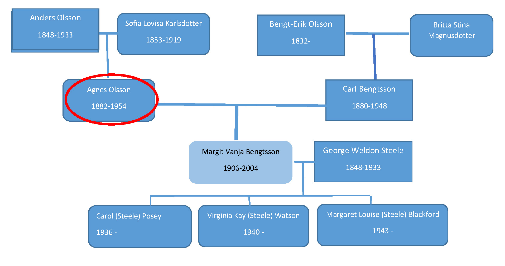
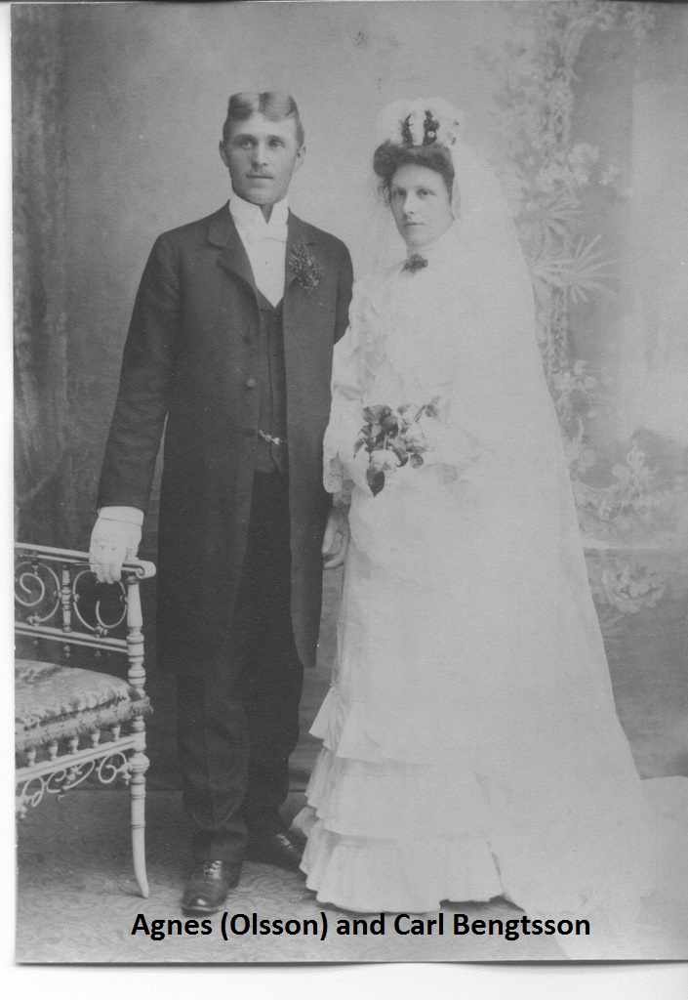
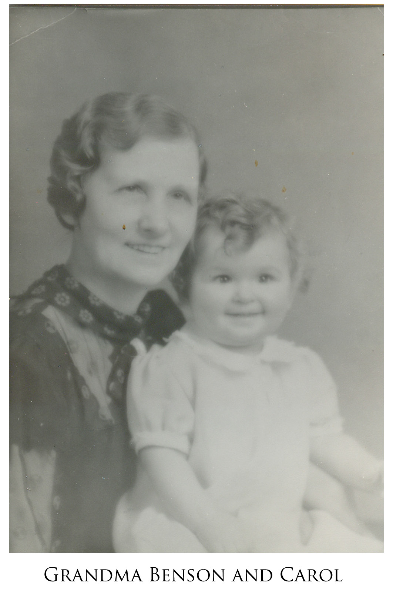
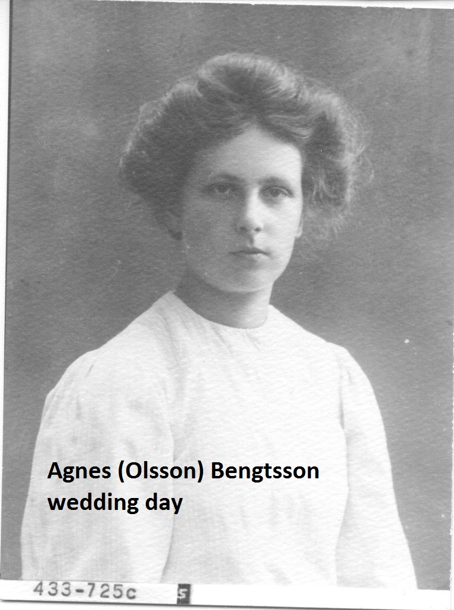
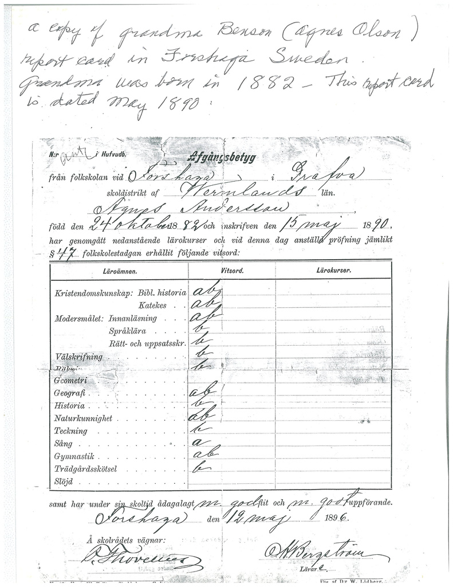
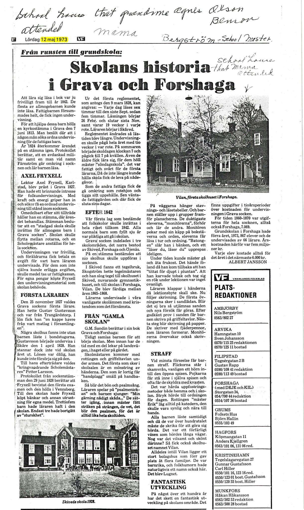

Agnes (Olsson) Bengtsson
Siblings:
- Anna Kristina 1875-
- Axel Albin 1878-
- Elin Sofia 1887-
- Hilder Maria 1889
- Carl Hjamar Stark
Carl, on his trips back to Sweden, had another son, Nils Carlson
Children:
- Margit Vanja Bengtsson
- Francis Hedvig Benson 1907-2001
- Eric Birger Benson 1909-1953
- Florence Sigrid Benson 1912-1934
- Holger Carl Benson 1913-1979
- Henry Albert Benson 1917-1973
- Harold Ejnar Benson 1917-1973
- Robert Philip Benson 1919 - 2016
- Lillian Isabelle Benson 1922 - 2009





